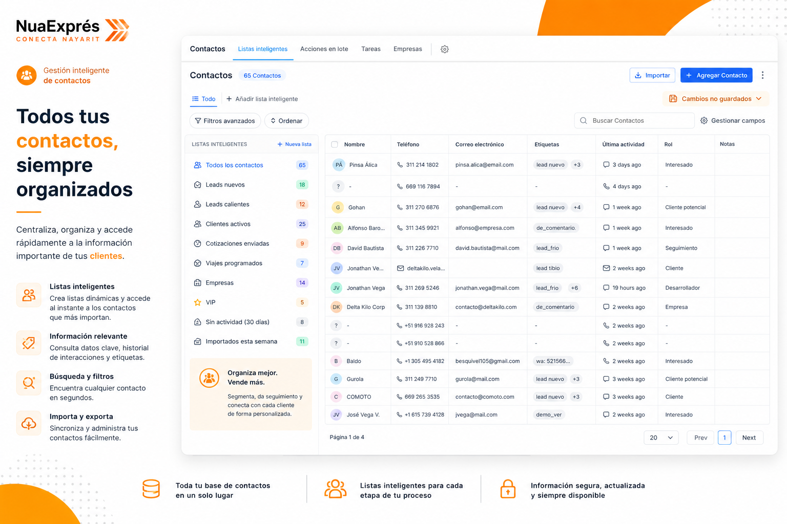

Automatizamos tus procesos, digitalizamos tu comunicación y convertimos tu presencia digital en una máquina de crecimiento — diseñada específicamente para Nua Exprés.
Ecosistema donde opera Nua Exprés
Su crecimiento merece herramientas digitales a la altura de este nivel de operación.
WhatsApp, Facebook, Instagram, web — cada uno en una app diferente. Tiempo valioso perdido cambiando entre plataformas.
Cada confirmación, recordatorio y seguimiento es una tarea manual que consume el tiempo de tu equipo — y multiplica los errores.
Publicaciones esporádicas, sin estrategia ni calendario. El algoritmo penaliza la inconsistencia y los clientes pierden confianza.
Escalar con procesos manuales genera caos. El crecimiento sostenible necesita automatización, no más personal.
Aquí es exactamente donde entramos nosotros.
El sistema responde, clasifica y da seguimiento a cada prospecto automáticamente — sin que tu equipo tenga que intervenir en cada paso.
Estos son ejemplos del contenido que producimos específicamente para Nua Exprés.

Entendemos tu operación actual, tus metas de expansión y definimos prioridades juntos.
Te presentamos el plan de implementación con tiempos, herramientas y costos claros.
Activamos las herramientas, capacitamos a tu equipo y arrancamos en días, no meses.
El primer paso es una conversación. Sin compromiso, sin burocracia — solo claridad sobre cómo podemos potenciar su expansión.
Delta Kilo Soluciones · Automatización · Contenido · Web